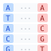

Teaching Materials
You are free to use these materials. Feel free to email me to tell me how you are using them, or to ask for a copy of the original Keynote files. You can also browse all course videos on my YouTube channel.
🎬 123 videos · 35+ hours 📄 ~140 slide decks 📓 42 notebooks 🎓 1 full Coursera course
Click a course title to expand.
Algorithms for DNA Sequencing · offered through Coursera
exact matching · Boyer-Moore · indexing · BWT · FM-index · alignment · assembly · Markov chains · HMMs
▶
A comprehensive introduction to computational genomics algorithms. Available as a full Coursera course and as freely downloadable lecture notes and notebooks.
- Full course on Coursera
- Lecture videos on YouTube (55 videos, about 7 hours total)
- Lecture notes on GitHub
- Jupyter notebooks on GitHub
Introductory
Strings and matching
Indexing
Sequence alignment
Assembly
Sequence models and classification
File formats
Miscellaneous

Burrows-Wheeler Indexing
entropy · BWT · FM-index · bitvectors · wavelet trees · Wheeler graphs · r-index · run-length encoding
▶
Notes added May 2020. YouTube playlist (27 videos, ~12 hours) added July 2020, updated summers 2022 and 2023.
Burrows-Wheeler Transform
Bitvectors
Wavelet Trees
FM Index
Wheeler Graphs
BWT for Repetitive Texts (r-index)
Suffix Indexing
tries · suffix tries · suffix trees · suffix links · matching statistics · suffix arrays · LCP arrays
▶
Notes added July 2023. YouTube playlist (15 videos, ~5 hours) added summer 2022, updated summer 2023.
Tries and Suffix Tries
Suffix Trees
Suffix Arrays
Sketching and Randomized Data Structures
hash tables · bloom filters · universal hashing · cardinality estimation · MinHash · Jaccard similarity · CountMin sketch
▶
Notes added May 2020. YouTube playlist (16 videos, ~7.5 hours) added July 2020.
- Hash Tables and Probability (YouTube part 1, part 2)
- Hashes and Randomness (YouTube)
- Bloom filters (YouTube part 1, part 2)
- Notebook: Shakespeare containment queries (Py+Colab)
- Coupon Collector and More Bloom Filters (YouTube)
- Notebook: Coupon collector simulations (Py+Colab)
- Randomness and Independence (YouTube)
- Universal hashing
- Cardinality
- Similarity and MinHash (YouTube)
- Notebook: Shakespeare MinHash (Py+Colab)
- Markov’s Inequality (YouTube)
- CountMin sketch
Sequence Modeling
probability · Markov assumption · Markov chains · Hidden Markov Models · Viterbi decoding · CpG islands · gene finding
▶
YouTube playlist (10 videos, ~4 hours).
Covers the foundations of probabilistic sequence modeling with applications to computational biology: the Markov assumption, Markov chains, and Hidden Markov Models, with applications to CpG island finding and gene finding.
- Sequence modeling: Intro (Slides, YouTube)
- Sequence modeling: Probability review (Slides, YouTube)
- Sequence modeling: Markov assumption (Slides, YouTube)
- Sequence modeling: Markov chains, part 1 (Slides, YouTube)
- Sequence modeling: Markov chains, part 2 (Slides, YouTube)
- Sequence modeling: Hidden Markov Models, part 1 (Slides, YouTube)
- Sequence models: HMM decoding (Slides, YouTube)
- Sequence modeling: Applying HMMs to CpG island finding (Slides, YouTube)
- Sequence modeling: HMMs for gene finding, part 1 (Slides, YouTube)
- Sequence modeling: HMMs for gene finding, part 2 (Slides, YouTube)
C and C++ Programming
compilation · types · pointers · memory · stack/heap · structs · OOP · templates · STL · inheritance · polymorphism
▶
Last updated May 9, 2020. See GitHub repo for original markdown and compilation script.
C programming
- Course goals
- Course conventions
- Stages of compilation and Hello, World
- Variables, types, operators
- Printing messages
- Decisions
- Arrays
- Characters and Strings
- Reading input
- Command line arguments
- Assertions
- Math
- Compiling and Linking
- Functions
- Program structure
- Makefiles
- Memory
- Pointers
- Pointers and Arrays
- Lifetime and Scope
- Stack and Heap
- Dynamic memory allocation
- Debugging with valgrind
- Debugging with gdb
- Structures
- Beyond 1D arrays
- Binary input/output
- Numeric types
- Type casting and Promotion
- Bitwise operators
- Linked lists
C++ programming
- C++ intro
- C++ I/O and Namespaces
- C++ strings
- Standard Template Library (STL)
- STL Vector and Iterators
- STL Map
- More about Iterators
- STL Pairs and Tuples
- References
- Classes
- Constructors
- New and Delete
- Non-default constructors
- Destructors
- Passing by Reference
- Inheritance
- Polymorphism
- Virtual Destructors
- Overloading
- Enumerations
- Static Members
- Object Oriented Design Principles
- Building Strings with stringstream
- File I/O with fstream
- Exceptions
- The Rule of 3
- Template Functions
- Template Classes
- Abstract Classes
- Writing a Container Class
- Auto Type
- ranged_for loops
- override keyword